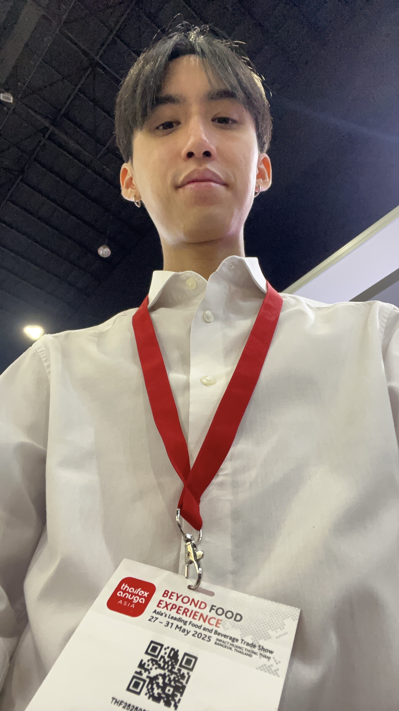

VENUS BISKUVI SAN. VE TIC. A.S | 27 May 2025 - 31 May 2025

Worked with Venus Biscuit, a Turkish food company, during the 2025 ThaiFEX international trade exhibition for 3 days alongside Mr. Mehmet Sinan Ertek, Regional Sales Manager. Communicated with multiple international clients and distributors from regions including the Middle East, India, Europe, Asia, and America. Provided detailed product information to potential buyers, including product details, private labeling services, export markets, product certifications, and distributor availability in different countries. Assisted in facilitating business discussions between clients and the regional sales manager by documenting customer interests, exchanging business cards, and recording potential business opportunities for follow-up communication. Additional responsibilities included distributing product samples, assisting visitors at the exhibition booth, maintaining booth organization, and supporting overall customer engagement throughout the event. Developed strong communication, translation, interpersonal, and international business interaction skills in a multicultural professional environment.
← Back